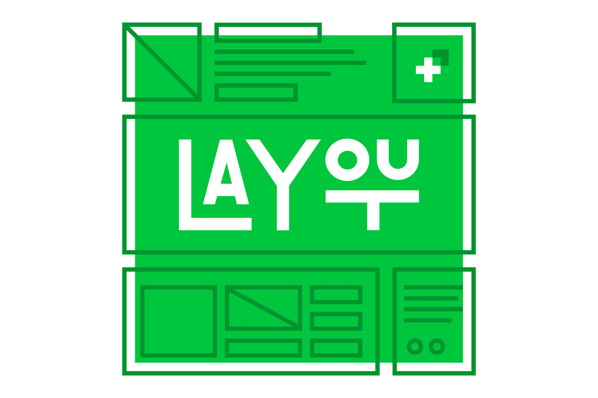

Layout é uma palavra inglesa que significa de maneira mais direta "plano".Na área da arte gráfica, o layout é um esboço ou rascunho que mostra a estrutura física de uma página de um jornal, revista ou página na internet (como um blogue, por exemplo). O layout engloba elementos como texto, gráficos, imagens e a forma como eles se encontram em um determinado espaço. O layout gráfico pressupõe o trabalho de um designer gráfico, que vai trabalhar no formato e números de página e suas margens, números de colunas de texto e outros aspectos relevantes.O layout de uma página vai depender da criatividade e do conteúdo que vai conter. Por esse motivo, muitas vezes o cliente dá indicações precisas ao designer, para que ele possa trabalhar no layout. Assim, o layout consiste em um rascunho, esboço ou projeto, um trabalho prévio que dá uma ideia de como será a aparência final da página em questão. Pode ser um desenho simples numa folha ou algo mais evoluído, quando o projeto já está em uma fase mais avançada.
